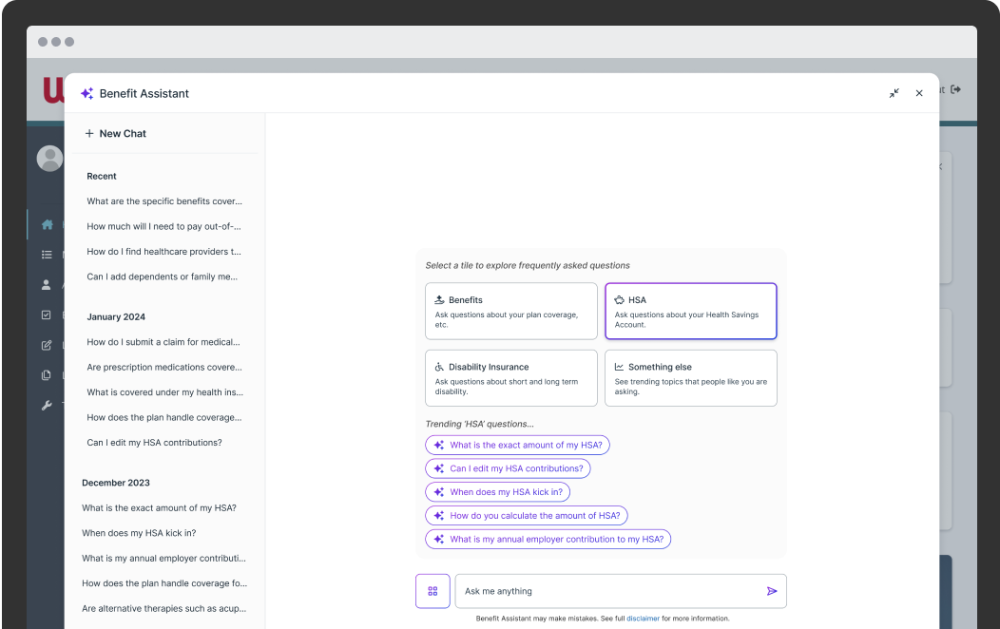
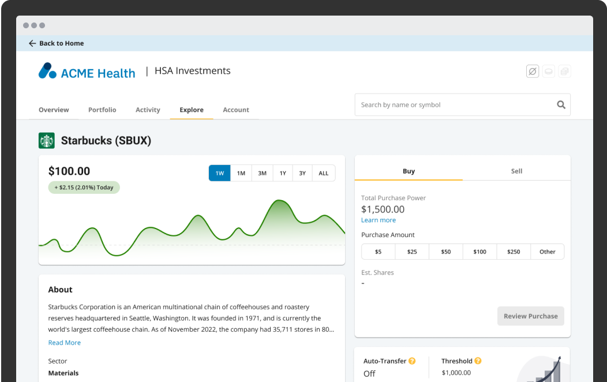
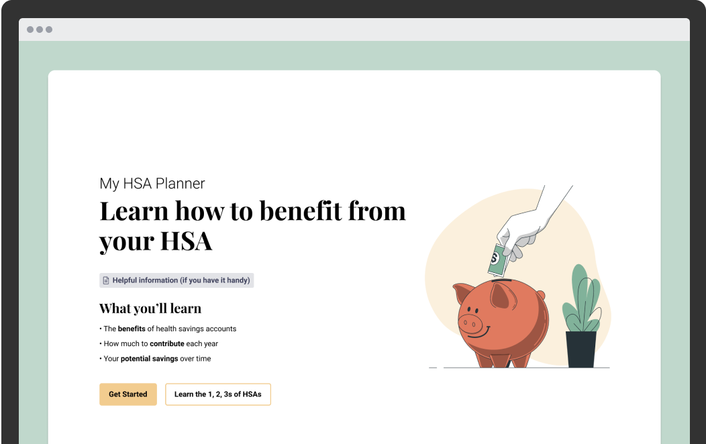
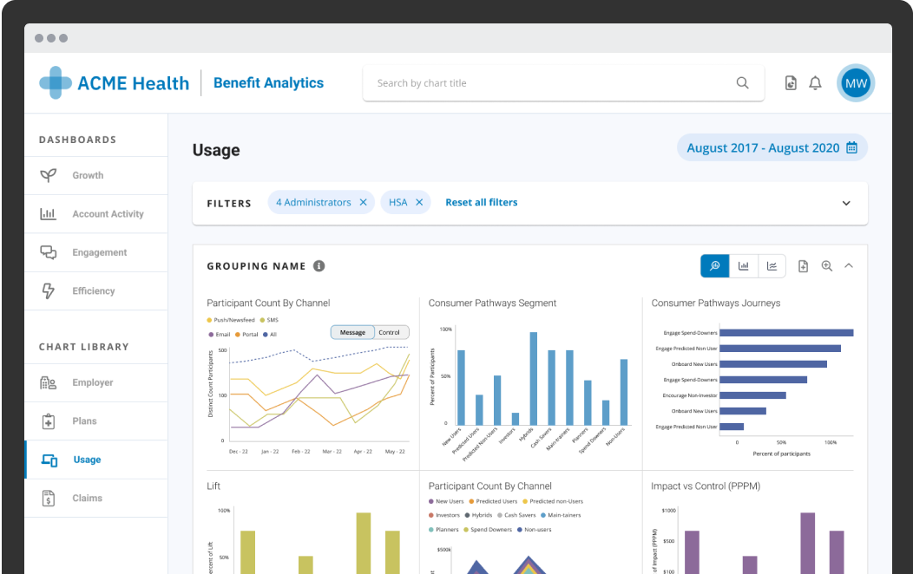

Hello! I'm a design technologist and senior UX leader with a background
that doesn't fit neatly into one box — dual degrees in Computer Science
and Interactive Design, a Master's in Oceanography, and 9+ years building
products for genuinely hard problems.
I still prototype in code. I still get deep into Figma at the detail level.
I introduced Cursor to our 60-person design org, built a training app to
onboard the full team, and shipped a complete mobile app prototype in four
weeks. For the past 6.5 years at WEX, I've led design across three
interconnected platforms serving 20M+ users — growing the team from 1
designer to 14 along the way.
What I care about most is the intersection of technical complexity and human
clarity — products where the system is genuinely hard, and the design work
makes that complexity disappear. That might be environmental data, scientific
tooling, developer products, or complex B2B SaaS. The domain matters less
to me than the depth of the problem.

Lead UX Designer
Designing a trusted AI assistant to help users navigate complex data — exploring the long-term vision for conversational UX in enterprise platforms.
View Project
Lead UX Designer
A modern investment tool bringing financial clarity to users — simplifying complex multi-asset investing into an approachable, consumer-grade experience.
View Project
Lead UX Designer
A decision support tool that translates complex financial tradeoffs into clear, actionable guidance for everyday users.
View Project
Lead UX Designer
An analytics dashboard giving enterprise administrators powerful insights to drive engagement, improve retention, and optimize platform performance.
View ProjectFigma · Cursor (AI-assisted development) · Wireframing & Prototyping · Coded Interactive Prototypes · Design Systems Management · Data Visualization
HTML · CSS · JavaScript · React (foundational) · Python · GitHub · Cursor · Claude · Gemini · ChatGPT
User Research & Persona Development · Customer Journey Mapping · Usability Testing & Analysis · Design Thinking & Innovation
UX Strategy Development · Cross-Functional Collaboration · Stakeholder Management · Design Review Facilitation · Outcome-Driven Design
Jira · Confluence · Pendo Analytics · Google Suite
Complex Data Systems · Enterprise SaaS · Benefits & Fintech Platforms · Scientific Data & Oceanography · Systems Thinking